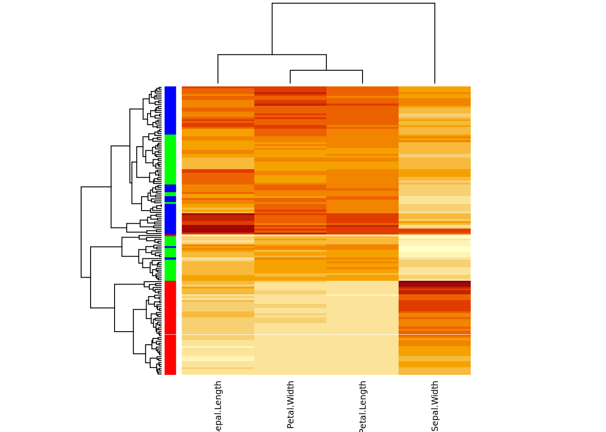
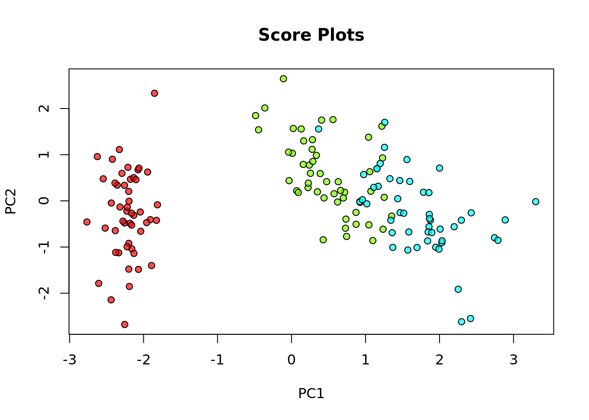
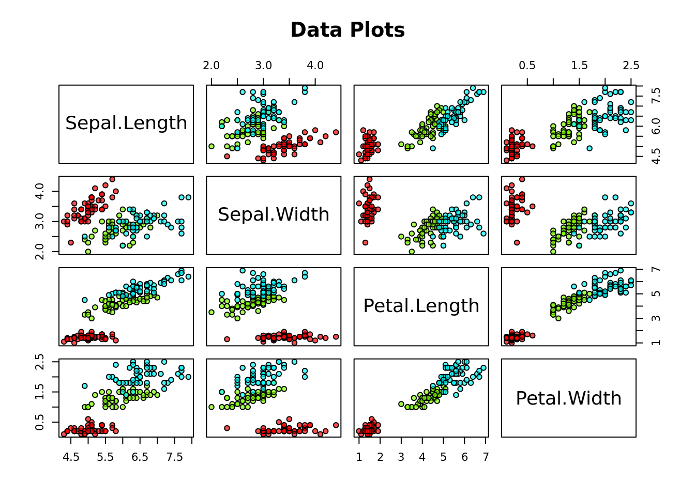

Main points so far
- R and Rstudio. Notebooks for reproducible analysis
- Structured data: vectors, data frames, list
- Functions: structured input –> structured output, parameters
& customization
- ( plotting and colors )
- packages: provide new functionality. CRAN & Bioconductor
- working with files: R objects, tab-separated files, I/O difficulties
(standardization)
Heatmaps: Show me all the data
M=scale(iris[,-5])
cols=rainbow(3)[iris$Species]
heatmap(M,scale="none", RowSideColors=cols,labRow=FALSE, cexCol=0.9)

Dimensional Reduction: PCA
- simplify description of data matrix \(M\): data reduction & extract most
important information
- maximal variance: look for direction in which data shows maximal
variation
- minimal error: allow accurate reconstruction of original data
 from amoeba @ https://stats.stackexchange.com/questions/2691/making-sense-of-principal-component-analysis-eigenvectors-eigenvalues
from amoeba @ https://stats.stackexchange.com/questions/2691/making-sense-of-principal-component-analysis-eigenvectors-eigenvalues
pca=prcomp(M, scale=TRUE)
Task: What kind of object is pca?
S=pca$x # score matrix = rotated data points
plot(S[,1:2], pch=21, bg=iris$Species, main="Score Plots")

plot(iris[,-5],pch=21, bg=iris$Species, main="Data Plots")

Bioinfo Core @ MPI-IE Freiburg (2023)